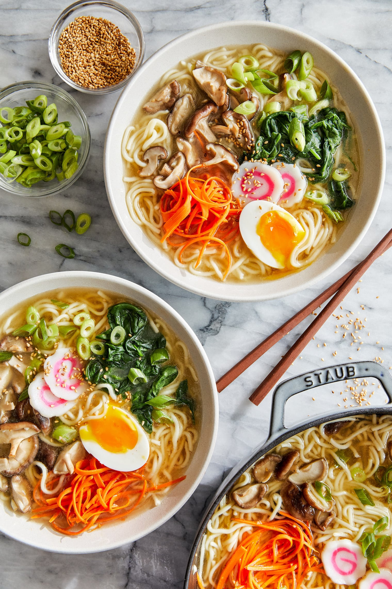

How to cook Ramen

Description
Ramen is a Japanese noodle soup dish. It consists of Chinese-style wheat noodles served in a meat and
egg-based broth, and uses toppings such as sliced pork, dried seaweed, and housemade toppings.
Ingredients
- 1/4 cup water
- 1/4 cup soy sauce
- 1/4 cup rice vinegar
- 1/4 cup light brown sugar
- 1/4 cup light soy sauce
- 1/4 cup water
Steps
- Heat a large pot of water to boil. Add the soy sauce, vinegar, brown sugar, and soy sauce.
Cook until the sauce starts to bubble, about 5 minutes.
- Add the water, and cook until the sauce is thickened, about 5 minutes.
- Drain the water from the pot.